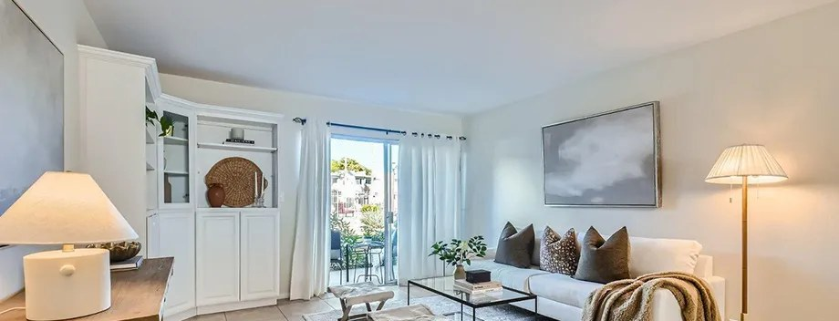

Scottsdale
100 closed sales · $747,500 median
Scottsdale is where the team has closed more transactions than anywhere else in the Valley, 100 in total, at a median sale price of $747,500 and a median of 40 days on market. Our Scottsdale sales run from $105,000 condominiums in the south of the city to a $9,050,000 estate in the north, which means we can speak to the entry point and the top of the market with the same authority.